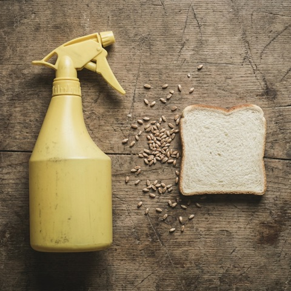
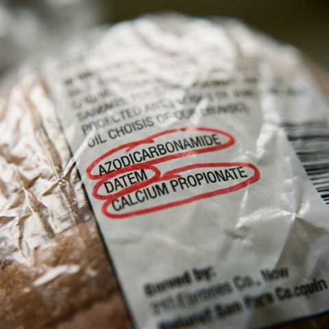
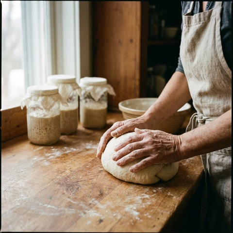
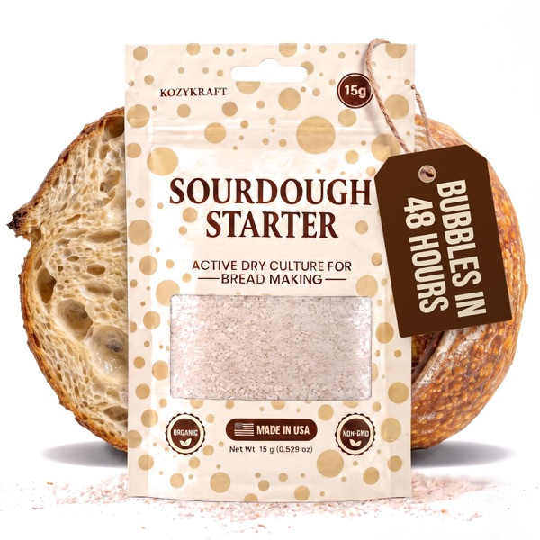
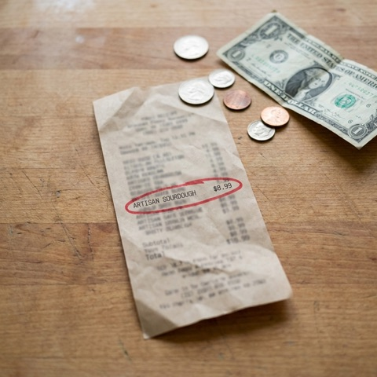
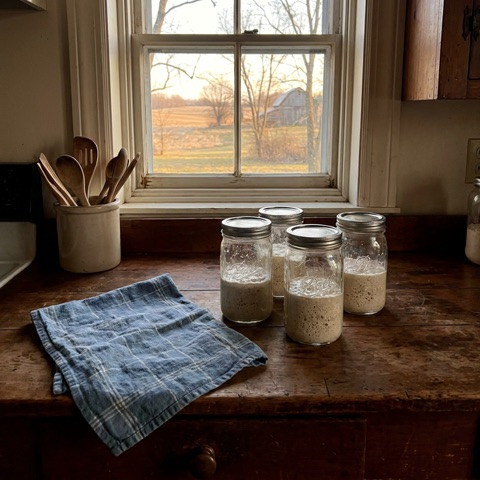
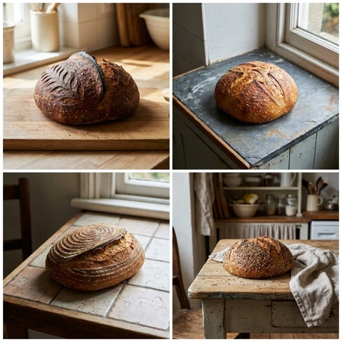

First bubbles by day 3. Bake-ready in 5–7 days. Here's why it's the easiest way to start baking real sourdough.

On many conventional wheat farms, glyphosate is sprayed shortly before harvest to dry the crop. Certified organic flour isn't grown that way. KozyKraft starter is cultured from USDA organic flour and filtered water — nothing else, the way bread has been made for thousands of years.

Read the label on a typical grocery loaf and you'll find ingredients most people can't pronounce — azodicarbonamide (not permitted in the EU), DATEM, mono- and diglycerides, calcium propionate. They're there to give factory bread a long shelf life and a pillowy texture. A loaf from a KozyKraft starter has exactly four ingredients: flour, water, salt, and time.
Grocery bread goes from mixer to oven in about 90 minutes using commercial yeast. Real sourdough rises slowly over many hours, giving wild yeast and lactobacillus time to work through the flour. That's where the deep, tangy flavor and chewy, open crumb come from — and it's why so many people say they can taste the difference from the very first slice.
Starting a starter from scratch can take weeks, and plenty of attempts never take off. KozyKraft starter is a mature culture, and every batch is tested for viability before it's packed. Just mix it with flour and water and keep up the daily feedings: you'll see first bubbles by day 3, and it's bake-ready in 5–7 days.

Many starters sold online are produced at industrial scale. KozyKraft is different. Every batch is grown, fed, and dehydrated by hand, in small batches, in Ohio. We don't run a factory. We run a kitchen. You can taste the difference in the first loaf.

Check Today's Price On AmazonThe starter you'll receive comes from a culture we've maintained for years. It carries a mix of wild yeast and lactobacillus bacteria — the combination behind the deep, tangy, nutty flavor real sourdough is famous for. Packet yeast is a single strain of Saccharomyces cerevisiae bred for speed, not flavor. There's no comparison.

Sourdough at the grocery store runs $7–$10 a loaf, and a bakery loaf can run $9–$14. Your starter, properly fed, can live for years — so the cost per homemade loaf comes down to about $1.20 in flour and salt. Bake twice a week instead of buying a $9 loaf and that's roughly $800 a year back in your pocket.

KozyKraft is a small team in Ohio. No venture capital, no overseas manufacturer. When you buy a KozyKraft starter, you're helping keep a thousands-of-years-old craft alive and supporting a real American family business.
"We started KozyKraft because we couldn't find a starter that actually worked the first time. Every batch leaves our kitchen tested, alive, and ready to bake."
— Abdel & Amr, KozyKraft Co-Founders

Not bubbling by day 7? Send us a photo and we'll ship a fresh packet, free. Ordered on Amazon? Message us from Your Orders.
We've shipped thousands of starters to kitchens across the country, and our goal is simple: you never need to buy another loaf.
| KozyKraft Starter | DIY From Scratch | Grocery Sourdough | |
|---|---|---|---|
| Time to first loaf | 5–7 days | 2–3 weeks, if it takes | — |
| Mature, tested culture | ✓ Every batch | ✗ Hit or miss | — |
| Ingredients in your bread | Flour, water, salt | Flour, water, salt | Often added yeast, conditioners, preservatives |
| Cost per loaf | ~$1.20 | ~$1.20 | $7–$10 |
| Free fresh-packet guarantee | ✓ Day 7 | ✗ | ✗ |
Grocery prices reflect typical US supermarket and bakery sourdough as of 2026. Homemade cost assumes flour and salt only.
Recent verified-purchase reviews of the dehydrated starter on Amazon.
"This absolutely change my sour dough game. The starter is performing better than any of mine did. I am BEYOND satisfied with this product and highly recommend. These pics are a loaf made 7 days after the first water was added to the dehydrated starter. It doubles in size in under 3 hours and makes amazing loaves."
"First time ever giving Sourdough a try, I purchased this in the hopes to get good results my very first loaf. My starter is looking great. I've already had to discard as it is rising well. From a person that's never had a starter I think this is a great option. Keep this at a nice warm temperature."
"Worked great. I followed the simple directions and it was ready in approximately 7 days. I made bread with it yesterday."
"So much easier than trying to make one from scratch… Def worth it to get your journey going."
"Turned out perfect. Taste amazing. Happy with my purchase."
Will the starter arrive dead?
No — it arrives dormant, not dead. Every batch is tested for viability before it's packed, and it wakes up when you add flour and water. Not bubbling by day 7? Send us a photo and we'll ship a fresh packet, free. Ordered on Amazon? Message us from Your Orders.
How long until I can bake my first loaf?
You'll see first bubbles by day 3. Keep up the daily feedings and it's bake-ready in 5–7 days. Starting a starter from scratch usually takes two to three weeks.
Any tips for getting it going?
Warmth is the big one. Starters are happiest around 75–80°F, so keep yours somewhere warm and out of drafts. Feed it on schedule every day during the first week — skipping a feeding early on is the most common reason a starter stalls.
I've never baked sourdough. Is this beginner-friendly?
Yes. The pouch comes with step-by-step instructions written for first-timers, and many of our customers bake their very first loaf with it. If you get stuck, you can reach us any time.
How do I store the pouch before I start?
It's shelf-stable. Keep the sealed pouch in a cool, dry pantry until you're ready to activate it.
How do I maintain the starter long-term?
Once active, feed it 1:1:1 (starter : flour : water) every 12–24 hours at room temperature, or about once a week if you keep it in the fridge. Cared for this way, a starter can live for years.
Is sourdough gluten-free?
No. Sourdough made with wheat flour contains gluten and is not safe for people with celiac disease. If you have a gluten sensitivity, check with your doctor before trying it.
What if I change my mind?
Amazon's standard return policy applies. On top of that, our day-7 guarantee: Not bubbling by day 7? Send us a photo and we'll ship a fresh packet, free. Ordered on Amazon? Message us from Your Orders.
Made in Ohio · Prime Eligible · Day-7 bubble guarantee